La Licence Informatique est une formation de 3 ans qui permet l'accès à un Master d'Informatique (bac + 5).
C'est une formation généraliste où les différents aspects de la discipline sont abordés : la programmation, le web, la programmation mobile, les réseaux informatiques, l'architecture des ordinateurs, etc.
À ces matières viennent s'ajouter les bases de Mathématiques qui sont nécessaires dans l'Informatique comme l'analyse, les statistiques, les probabilités, le calcul matriciel.